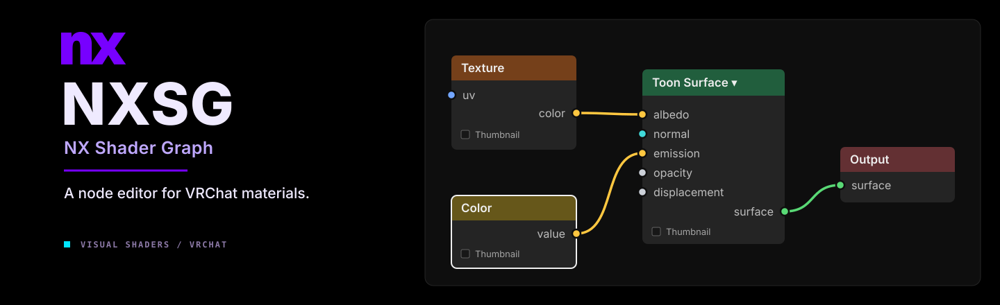
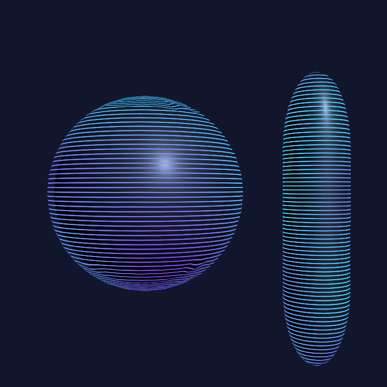
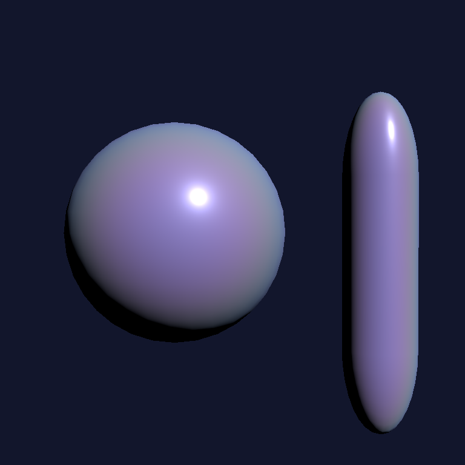
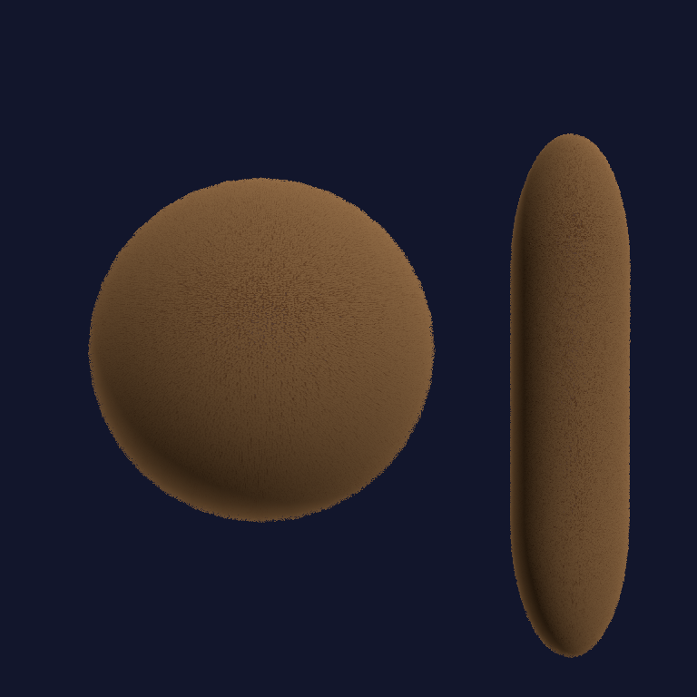
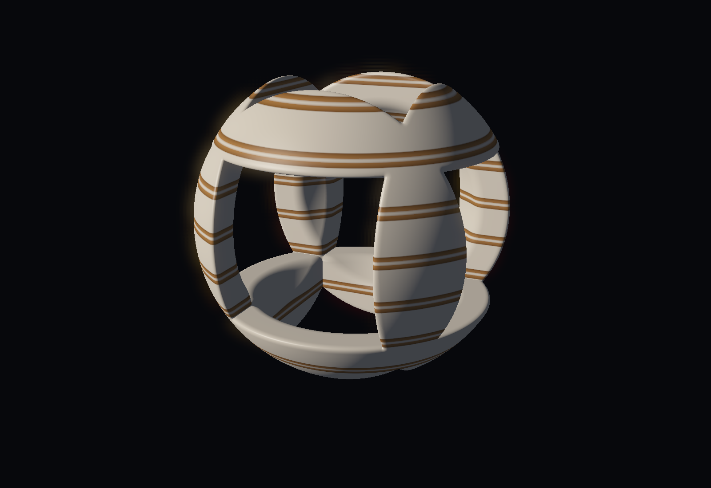
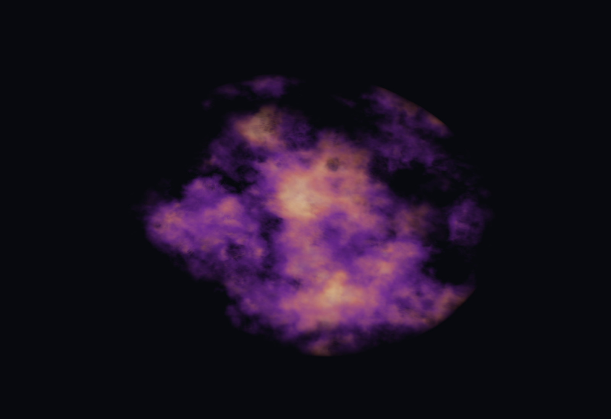
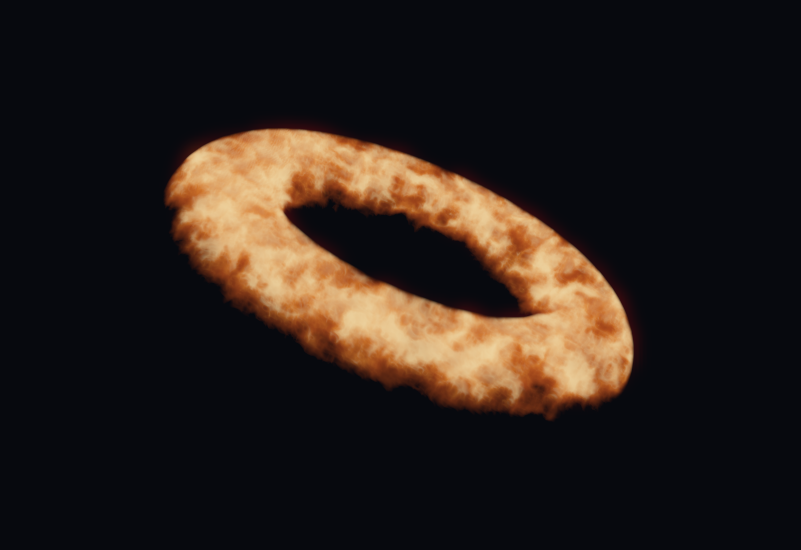
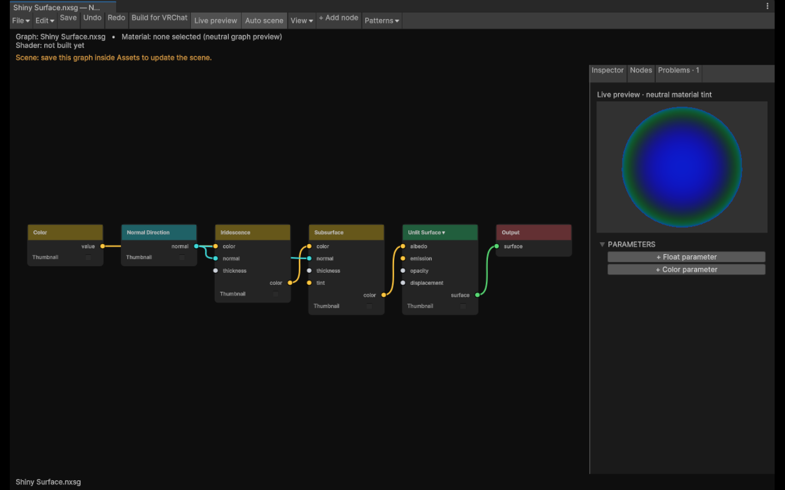

{kind=link}
{kind=link}
{kind=link}
Get the lighting right.
Toon, PBR and Unlit. Control lighting brightness and saturation on lit surfaces, choose whether to use albedo alpha, and add matcaps, rims or optional LTCGI.
NX Shader Graph · 1.0
Start with a texture. Give it fur, light, movement—or a hologram floating above the mesh. Connect it all with nodes, right inside Unity.

Made with NXSG
These are real Unity renders from the included graphs. Open one, follow the wires, and change whatever you like.



Scroll UVs, animate a mask, dissolve an edge or drive an effect with AudioLink inputs. A Time node is often all you need to get started.
Explore the example graphs ↗Primitive-mesh studies, not VRChat client footage. No external textures were used for these examples.
Raymarching studies
Carve a hollow sculpture, layer violet dust, or fill a ring with glowing noise. These effects are evaluated inside a cube using Volume Surface and distance-field nodes.



Rendered in Unity with presentation bloom and tone mapping. These three example graphs are included. PC Built-In only; use a closed cube proxy and check the GPU cost.
Read the volume guide and get the graphs ↗What's in the box
From a color swatch to generated fur and raymarched volumes. Pick a surface and build the rest around it.
Toon, PBR and Unlit. Control lighting brightness and saturation on lit surfaces, choose whether to use albedo alpha, and add matcaps, rims or optional LTCGI.
Shells, silhouette fins or cards-only fur generated from mesh edges. Shape it with masks, root and tip colors, grooming, wind and local self-shadowing.
View-dependent glitter, iridescence, stickers, nested shells, wireframes and parallax. Tessellation is there when you need actual displacement.
Noise in 1D–4D, Voronoi, Musgrave-style fractals, waves and ramps. Connect distortion, Polar or Panosphere coordinates to change the whole pattern.
UV scrolling, flipbooks, dissolve, vertex animation and shader-driven particles emitted from the mesh. Locomotion inputs can drive glow, flutter and UV stretch.
Live previews, named texture slots, intermediate node previews and reusable Patterns. Compare material snapshots, scrub time, import texture sets and bake static branches.
Inside Unity
Blender-like node editing, built for Unity. Drag from either socket, drop a wire into empty space to add a node, or switch related operations from the header.

Search for a node, shape a mask and preview its output before it reaches the surface.
Build for VRChat creates a shader and material locally. Assign the material to your mesh.
Auto scene applies saved edits after a short pause. Turn it off when you want manual builds.
Try it
Add the repository to ALCOM or Creator Companion, then install NX Shader Graph in your project.
Version 1.1.0 is available. Refresh your repository listing to install or update. Prerelease packages do not need to be enabled.
https://nerdrx.github.io/nxsg/index.jsonThe VCC button needs a registered vcc:// handler. On Linux, paste the URL into your package manager's repository settings.
Build creates local assets. It does not upload your avatar.
Compatibility
Developed and tested on Linux with Unity 2022.3.22f1 for PC Built-In shaders. Native Windows/D3D, headsets and the live VRChat client still need validation. Quest/mobile avatars aren't supported. Start in a test project.
Fur, shells, particles and tessellation can get expensive. Cards follow mesh edges and can overlap; shell LOD doesn't apply to cards. Cost warnings are estimates, not GPU measurements. Additional pixel lights affect Toon/PBR base surfaces; overlays have more limited lighting. Brightness limits apply per contribution. AudioLink and VRCFury still need live integration testing.
Read the test record ↗The editable graph, compiler and Unity editor are separate. A community node SDK, Blender bridge, CLI and web viewer are longer-term plans. The source is public; no project-wide open-source license has been selected.
Panosphere filtering follows Poiyomi's derivative-aware approach under its MIT license. Graphlit and ShaderGraphVRC are research references.
Third-party notices ↗Found a broken graph or a confusing control? A small example and a screenshot help a lot.
Report a bug or suggest an idea ↗